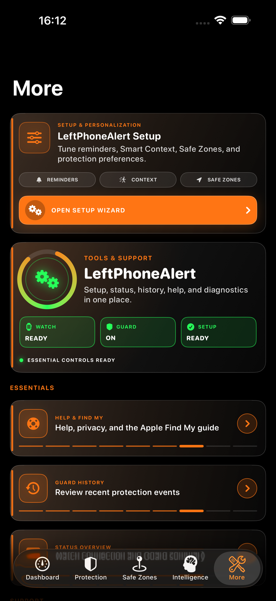
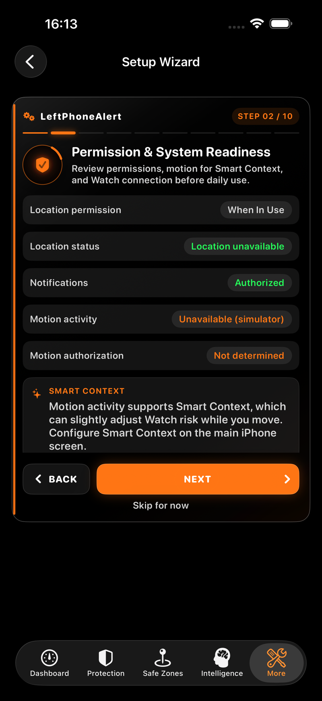
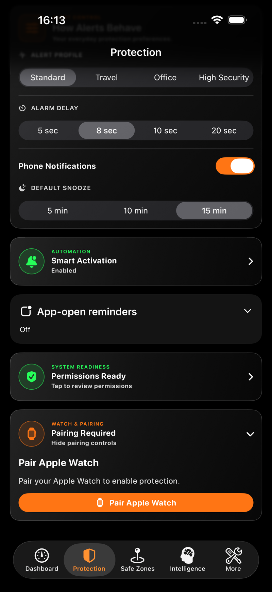

iPhone
Open the Setup Wizard.
Tap More in the bottom bar, then Open Setup Wizard at the top.
Use Next and Back to review the ten steps. On the final step, tap Complete Setup. You can return to the wizard later from More.

Your iPhone. Your Apple Watch. A few simple steps to get LeftPhoneAlert ready for your day.
Your Apple Watch must already be paired to this iPhone in Apple’s Watch app. LeftPhoneAlert’s secure app pairing is a separate step.
If both apps show Protected and Guard is on, you do not need to pair again. An existing secure pair can reconnect automatically, including after some reinstalls. If either app asks for pairing, follow the manual steps below.
Tap More in the bottom bar, then Open Setup Wizard at the top.
Use Next and Back to review the ten steps. On the final step, tap Complete Setup. You can return to the wizard later from More.

Step 2 is Permission & System Readiness. Review notification, location and motion access. Allow Bluetooth access if requested.
Notifications support alerts and reminders. Location supports Safe Zones; motion supports Smart Context. Follow the app’s explanation for each permission.
If you previously denied access, use Open iPhone Settings in this step to review it, then return to LeftPhoneAlert.

Keep both apps open. Start pairing on one device, then complete the confirmation on your iPhone.
Open Protection in the bottom bar. Scroll down to Watch & Pairing and expand the card if needed. Tap Pair Apple Watch.
Wait for the pairing screen and verification code. The Watch tells you to Continue on iPhone.
Check that the verification code is identical on both devices. If it matches, tap Confirm Pairing on your iPhone. There is no confirmation button to press on the Watch.
If the codes differ, tap Cancel and start again. Do not confirm a different code.
Keep the devices together while the app finishes. Look for Pairing Complete, then follow the protection check below. A completed pair and active protection are separate checks.

If the Watch offers Start Guard, tap it and review any permission prompts. Keep both devices together while the connection is checked.
Check the Watch’s main screen and the iPhone Dashboard or Protection tab. Both should show Protected with Guard on before you rely on leave-behind alerts.
If a screen still says Checking, Verifying Protection, Pairing Required or Unavailable, protection is not yet confirmed. Keep the apps open nearby and use the help below if the message persists.
Review Safe Zones and Snooze too: they can intentionally silence or pause eligible alerts even while Guard is on.
When setup is finished: you can lock your iPhone or use another app. Leave LeftPhoneAlert in the background. Avoid swiping it away from the iPhone app switcher; if you do, reopen it and check both protection screens.
Keep both devices close, unlocked and in LeftPhoneAlert. Check that the Watch app is installed and Apple’s Watch app recognises this Watch. Check Bluetooth on the iPhone.
If the app offers Try Again, tap it. If a pairing attempt is still open, use Cancel, then start one new attempt from the iPhone. Keep both apps open until confirmation finishes.
If it still fails, contact support with the exact messages on each device. Do not send the verification code.
Try Again may retry connection recovery or a failed pairing attempt. Re-pair Phone starts a new pairing attempt from an existing pair. Follow the on-screen instructions and complete any code confirmation on your iPhone.
If both devices already show Protected, a new pair is unnecessary.
Revoke Pairing removes LeftPhoneAlert’s secure app pairing and requires you to pair again for Bluetooth protection. It is not a normal first-setup step. Replace Watch is for intentionally pairing a replacement Watch.
You do not need to unpair the Apple Watch from your iPhone in Apple’s Watch app for the normal LeftPhoneAlert setup. Contact support before removing a working pair or reinstalling to troubleshoot.
An interruption in the app’s connection can occur even while the devices are close. Reopen the iPhone app if it was force-quit, keep the devices together and check connection and protection status on both screens.
If it happens again, note the time, exact alert wording and whether the iPhone app was in the background or had been swiped away. Contact support before uninstalling or resetting pairing.
LeftPhoneAlert offers short, adjustable alarm delays of 5, 8, 10 or 20 seconds. That setting is one part of total alert timing: detecting an interrupted link between your Watch and iPhone, recovery checks and system delivery also affect when an alert arrives. Safe Zones and Snooze can intentionally suppress or defer eligible alerts; there is no guaranteed alert time in every condition.
Save a familiar place, give it a name and choose one of the available zone sizes. Indoor location can be imprecise. A saved or enabled zone alone does not confirm that your Watch is currently inside it.
If automatic Safe Zone creation cannot obtain a usable location, use the map option when offered. A manually saved place still needs the normal location confirmation before it can silence eligible alerts.
Check the app’s information or diagnostics view. If using TestFlight, its LeftPhoneAlert page also lists the installed version and build. Include both phone and Watch versions when reporting an issue.
Use Report an Issue or the diagnostic sharing controls available in the app. Review the report before sharing: detailed exports may include timestamps, device information and precise location. Send only information relevant to your question.
App-open reminders are optional check-ins. Use their control in the app to disable them. They do not reliably detect whether the app has been force-quit and are separate from alerts triggered by an interrupted link between your Watch and iPhone.
leftphonealert.support@gmail.com
Tell us your app version and build, iPhone and Watch models, approximate time of the issue and the exact messages on both screens. Never send passwords or pairing codes.
On iPhone, open More → Support Diagnostics to find the app version and device information.
Guide checked against LeftPhoneAlert 1.0 (build 72). Screens were captured in Xcode Simulator; connection, location and permission values may differ on your devices. Tap a screenshot to enlarge it.
Learn about device data, Safe Zones, permissions and optional diagnostic sharing in our Privacy Policy.